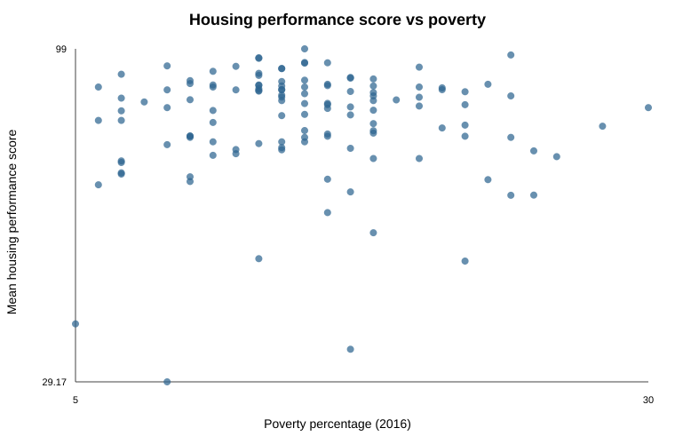
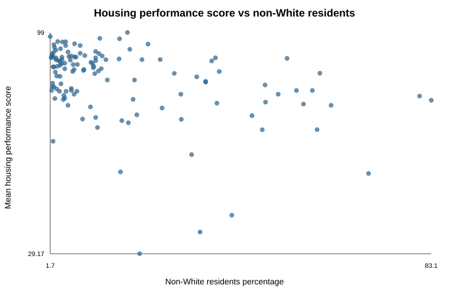

These figures summarize correlations in the provided data; they do not establish causal effects. Key metadata for the housing score and racial composition data were not provided.
Housing Performance Poverty and Race Analysis
County-level descriptive analysis | October 2026
Main conclusion
Across the 126 counties with a housing performance score, housing performance had almost no linear relationship with the 2016 poverty percentage (Pearson r = 0.044). It had a modest negative relationship with the percentage of non-White residents (r = -0.384). These are county-level associations, not evidence that poverty or racial composition causes a housing score or that the results describe particular people or organizations.
Initial notes and questions
Housing_Performance.csvhas one row per county code and aMeanPHAShousing performance value. Question: What exactly does the score measure, what is its scale, and what reporting period does it represent?Poverty.csvcontains county identifiers, geography, population in poverty, a 2016 poverty percentage, and household income. Question: Is the 2016 measure comparable in timing and definition to the housing score?Race.csvcontains county identifiers, geography, White percentage, non-White percentage, and county population. Question: What year and definition does the race file use, and how were categories constructed?- The files share county codes such as
DE001, suggesting county code is a possible join key. Question: Are county codes unique and complete in every file, and how many housing counties match both source files?
Before calculating, I expected poverty might have a negative relationship with housing performance because higher poverty could make housing challenges more difficult to address. I did not have a strong expectation about racial composition because the files do not identify the mechanisms connecting demographics to performance. These were expectations, not observations.
Decision log
| What I noticed or needed to understand | What I asked AI | What I learned or decided | How I checked it |
|---|---|---|---|
| The files share county-code fields but use different column names. | Can the county code uniquely connect the files? | Use the county code after trimming and case-normalizing; verify uniqueness before merging. | The audit reports 126, 282, and 282 unique nonblank keys. |
| The housing score has no supplied scale or period. | What can be claimed about the score? | Treat it as an observed score and avoid inventing a definition or time comparison. | Checked the source headings and README limitations. |
| I needed repeatable calculations and inspectable outputs. | Should this run in Python or a spreadsheet? | Use the supplied standard-library Python script because it is reproducible, saves CSV outputs, and can be rerun from the folder. | Ran py analyze_data.py and read the generated outputs. |
| The existing script did not make the required plots. | How should the relationships be shown? | Add two labeled scatterplots using the combined analysis data. | Checked labels, axes, and point counts in the saved images. |
Analysis tool and preparation
I used Python. The script reads the three untouched source files, validates nonblank unique county keys, uses Housing_Performance.csv as the base, and left-joins poverty and race records by county code. This keeps every county with an observed housing score. It writes combined_analysis.csv, summary_statistics.csv, pairwise_correlations.csv, and merge_audit.txt. The run can be repeated with py analyze_data.py from this folder.
The merge retained 126 of 126 housing counties in both source files, producing 126 combined rows. Poverty and race each contain 156 counties without a housing score, so those records were not part of this analysis. Several combined records were spot-checked against the original rows through the county-code fields. The key fields were unique in all three inputs, which supports the one-row-per-housing-county merge. The race file does not state its reporting year, and the housing file does not define the score scale or reporting period.
Summary statistics
| Measure | Usable n | Mean | Median | Sample SD | Minimum | Maximum |
|---|---|---|---|---|---|---|
| MeanPHAS housing score | 126 | 83.804 | 87.145 | 11.506 | 29.17 | 99.00 |
| Poverty percentage (2016) | 126 | 14.992% | 15.00% | 5.131 | 5.00% | 30.00% |
| Non-White residents percentage | 126 | 16.833% | 8.85% | 18.383 | 1.70% | 83.10% |
The mean and median show the center of the observed county values; the standard deviation describes spread around the mean. Percentages are percentage points, not proportions. These statistics summarize the supplied columns; they do not resolve the missing reporting year or score definition.
Correlation analysis
| Measure pair | Pairwise n | Pearson r | Plain-language reading |
|---|---|---|---|
| Housing score and poverty percentage | 126 | 0.044 | Essentially no linear association in this dataset. |
| Housing score and non-White residents percentage | 126 | -0.384 | A modest negative linear association: higher non-White percentage tended to coincide with lower scores, but the pattern is not a complete or causal explanation. |
| Poverty percentage and non-White residents percentage | 126 | 0.114 | A small positive linear association. |
Correlation ranges from -1 to 1. Values near 0 indicate little linear pattern; negative values indicate that one measure tends to be lower as the other is higher; positive values indicate that they tend to rise together. Correlation does not establish causation.
Plots

Figure 1. Each point represents one of the 126 counties in the combined analysis dataset.

Figure 2. Each point represents one of the 126 counties in the combined analysis dataset.
The first plot is consistent with the near-zero correlation: the points do not form a strong upward or downward line. The second plot shows more of a downward tendency, consistent with r = -0.384, but the points remain widely scattered. No plot alone explains why a county has a particular score.
Explanation for a public-sector leader
I analyzed 126 counties that had a housing performance score and successfully matched records for those counties to a 2016 poverty percentage and a percentage of non-White residents. The results describe associations among county-level measures in the supplied files. They do not describe individual residents, particular housing organizations, or current conditions unless the files establish those connections.
The main finding is that the housing score and poverty percentage were almost unrelated in a simple linear comparison. The correlation was 0.044, which is very close to zero, and the scatterplot shows no clear straight-line pattern. The housing score and non-White residents percentage had a modest negative correlation of -0.384. In ordinary language, counties with larger non-White percentages tended to have lower housing scores in this dataset, but the points were still dispersed and the relationship was not strong enough to serve as an explanation by itself. Poverty and non-White percentage had only a small positive correlation of 0.114.
These results support describing patterns in the 126 matched counties. They do not support a claim that poverty or racial composition causes housing performance, that a demographic characteristic determines an organization’s performance, or that an association applies to people within a county. The housing score’s scale and reporting period are not defined in the supplied file, and the race file does not state its year. The analysis also does not control for other factors such as housing stock, funding, rurality, administrative capacity, local labor markets, or measurement differences. The correlations are descriptive and may be affected by omitted variables or by the way the measures were constructed.
Before recommending policy or management action, I would need the score definition and time period, the race data’s reporting year and category definitions, current comparable data, information about program design and funding, and additional explanatory variables. I would also want subgroup and sensitivity checks, consultation with affected communities, and a plan for monitoring whether any intervention improves outcomes without creating unintended effects.
Process reflection
One question that helped me move forward was whether the county codes were unique and complete; it turned a possible merge assumption into a checkable decision. I chose to keep the housing file as the merge base after inspecting the audit because the task centers on counties with observed housing scores. I would ask earlier what each source’s reporting period and measure definition were, because those limits shape how confidently the results can be compared.
Files used and reproducibility
analyze_data.py— repeatable merge, summary statistics, and correlation calculations.combined_analysis.csv— 126-row merged analysis dataset.summary_statistics.csv— selected-measure summaries.pairwise_correlations.csv— Pearson correlations and pairwise counts.merge_audit.txt— merge coverage and limitations.housing_vs_poverty.svgandhousing_vs_nonwhite.svg— scatterplots included above.
Run py analyze_data.py in this folder to regenerate the CSV analysis outputs. Run py make_report.py to regenerate the plots and this Markdown report.